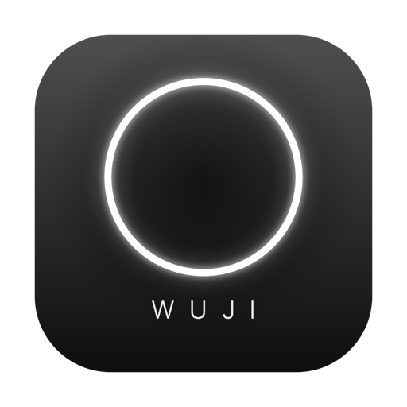
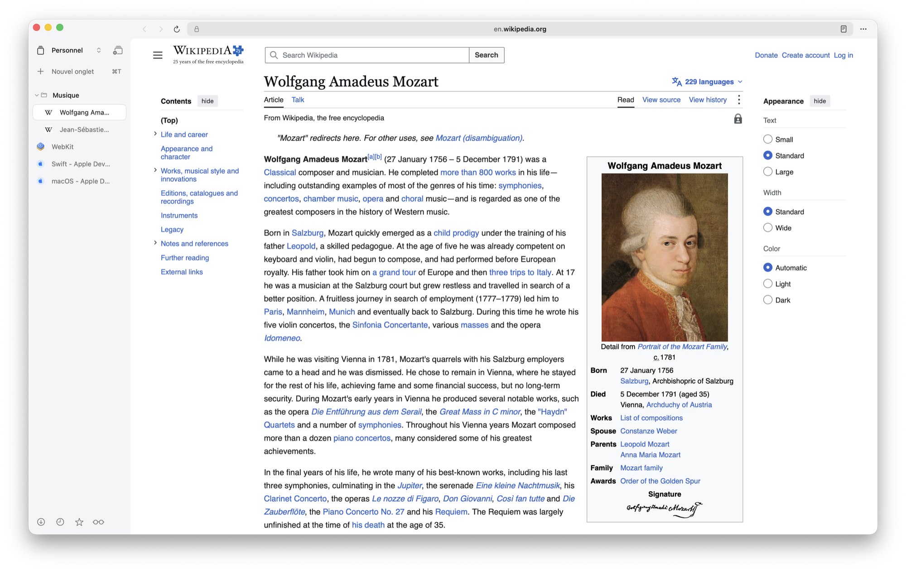
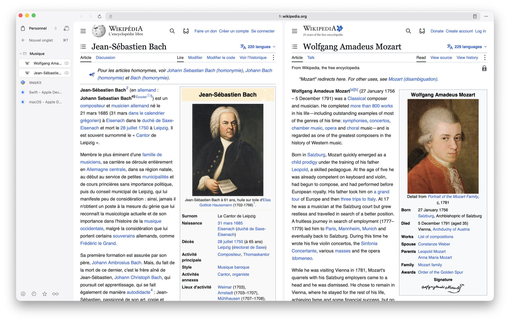
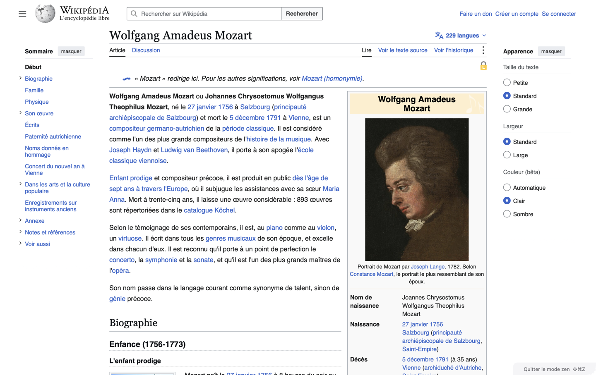
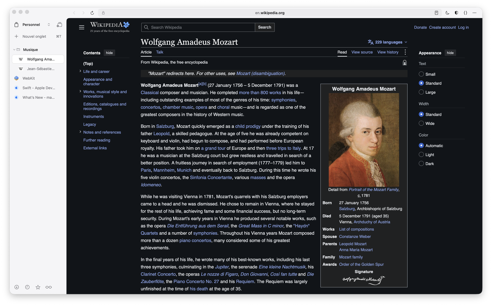
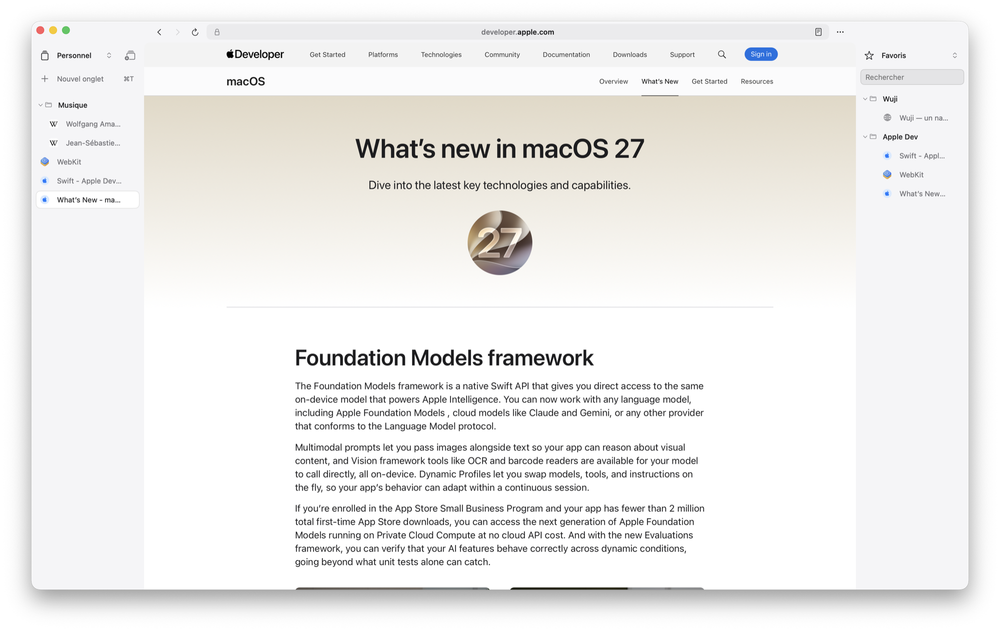
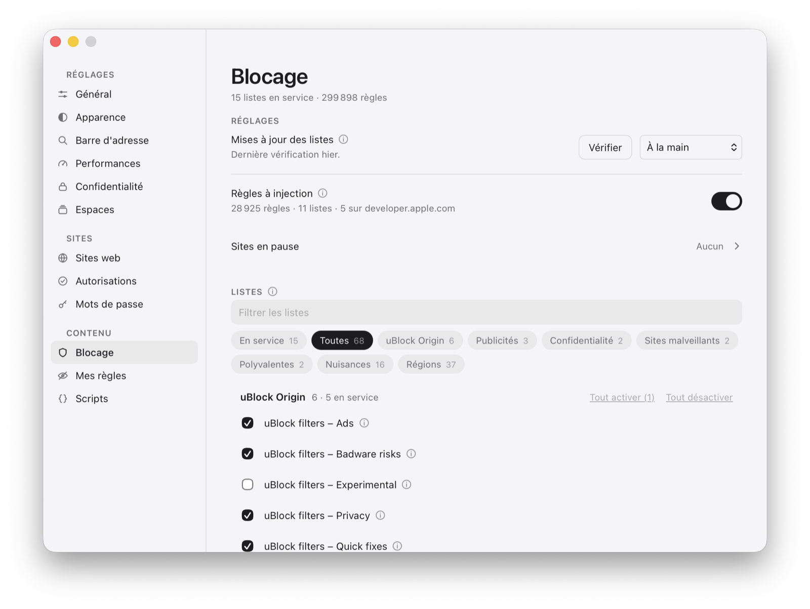
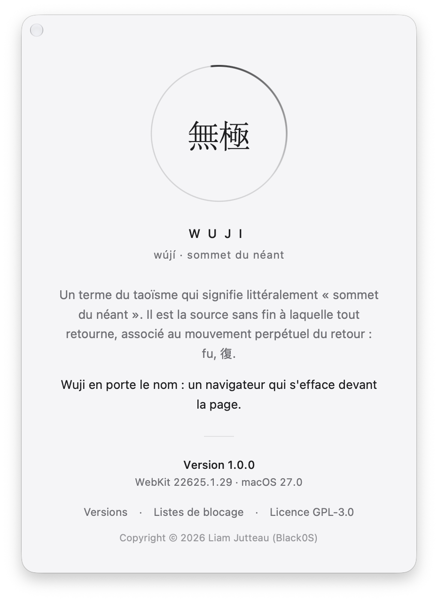

Wuji 1.0.0
Apple Silicon, macOS 27 au minimum. Aucun compte, rien à connecter.
Télécharger le .dmg Installer, pas à pasJe conseille Search, un navigateur WebKit plus suivi que Wuji →
macOS 27 · Apple Silicon
Écrit en Swift et AppKit, posé sur WebKit. Les onglets à gauche, la page au centre, ce qu'on a mis de côté à droite — et une palette quand on cherche quelque chose. Pas de barre d'outils qui s'accumule, pas de bouton qui ne fait rien.
Version 1.0.0 · Apple Silicon, macOS 27 au minimum · MIT

Huit sujets, et chacun sa page, avec toutes ses fonctions. Chacune est là parce qu'elle rend quelque chose possible, pas parce qu'un navigateur est censé l'avoir.
Fenêtres et espaces, deux colonnes, la palette, deux pages côte à côte, le mode zen.
Pages sombres, mode lecture, liste de lecture, favoris, historique, captures.
Le catalogue d'uBlock Origin, compilé par WebKit. Aucune liste imposée.
Fenêtre privée, cookies refusés, traceurs retirés des liens, aucune télémétrie.
Un coffre chiffré, Touch ID, une complétion que la page ne voit pas.
Réglages par site, autorisations, notifications, le cadenas — et un audit de sécurité complet avant la 1.0.
Des outils de développement dans la fenêtre, son site en direct, et des scripts utilisateur.
Des onglets qui dorment, un budget de mémoire, rien sur le chemin de la page.
⇧⌘D divise la vue ; un onglet ou un favori tiré sur une moitié de la page s'y ouvre. La barre d'adresse suit le panneau qu'on a choisi, et la session retrouve la paire.
En savoir plus
⇧⌘Z : la page, seule, jusqu'aux bords. La barre de titre revient quand le curseur va la chercher, et la sortie attend dans le coin avec le curseur de zoom.
En savoir plus
La version sombre du site s'il en a une ; sinon, un thème fabriqué élément par élément — pas un filtre qui retourne les photos. Sans recharger la page.
En savoir plus
Favoris, historique, téléchargements ou liste de lecture, dans une colonne qui se cherche, se range au glisser et se tire vers la page. ⌥⌘0 l'allume.
En savoir plus
⌥⌘I : éléments, console, sources, réseau, stockage et un mode appareil, posés sous la page sans la raccourcir.
En savoir plus
Wuji n'embarque aucune liste. Le catalogue est celui d'uBlock Origin ; « Sélection recommandée » en pose neuf d'un clic, et WebKit les applique dans son processus réseau — une requête bloquée ne part pas. Ce que WebKit ne sait pas faire, Wuji le rejoue avec le code d'uBlock Origin lui-même.

無極, wújí : un terme du taoïsme qui signifie littéralement « sommet du néant ». Il est la source sans fin à laquelle tout retourne, associé au mouvement perpétuel du retour, fu, 復. Un navigateur qui s'efface devant la page en porte le nom.

Les absences sont décidées, et chacune a sa raison.
Un réglage qui ne pilote rien donne l'illusion d'un produit plus avancé qu'il ne l'est.
La seule requête que Wuji émette pour lui-même vérifie la version — sur un clic, sans identifiant.
Une liste absente ne peut pas se tromper en votre nom : rien n'est bloqué avant que vous l'ayez décidé.
Chaque frappe partirait chez un tiers. La palette cherche chez vous seulement.
Un identifiant n'entre que dans le champ où l'on a cliqué, jamais dans un cadre d'une autre origine.
Chaque chiffre de ce site vient d'un banc, d'un test ou du code — pas d'une promesse.
Wuji est fait avec l'intelligence artificielle. Autant le savoir avant de l'installer.
Le code de Wuji, ses essais, ce site et sa traduction ont été écrits avec les modèles Claude Opus 5 et Claude Opus 5.5 d'Anthropic.
Ce que fait Wuji, ce qui entre dans chaque version et ce qui en sort est choisi, essayé et publié par son auteur, Liam Jutteau.
Aucun avertissement de compilation, un essai pour chaque correctif, des audits de sécurité, et une mesure derrière chaque chiffre de ce site.
Glisser l'application dans le dossier Applications, et c'est tout.

Apple Silicon, macOS 27 au minimum. Aucun compte, rien à connecter.
Télécharger le .dmg Installer, pas à pasWuji arrive vide, et c'est voulu : rien n'est choisi à votre place.
Wuji est une preuve de concept : il est né pour montrer qu'on peut construire un navigateur ultra léger sur WebKit. Pour un usage de tous les jours, je conseille Search, lui aussi posé sur WebKit, publié par Office Commun sous licence MIT. Je le trouve meilleur et plus sérieux que Wuji : il est plus connu et a plus de moyens de développement derrière lui.